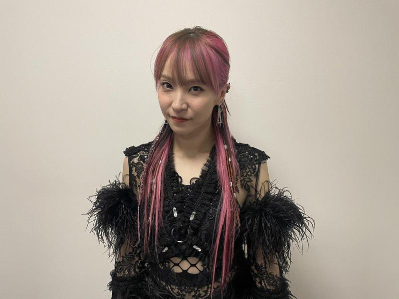

Profile
Introduction
LiSA (Oribe Risa, born June 24, 1987), better known by her stage name LiSA, is a Japanese singer, songwriter and lyricist from Seki, Gifu, signed to Sacra Music under Sony Music Artists.

After aspiring to become a musician early in life, she started her musical career as the vocalist of the indie band Chucky. Following Chucky's disbandment in 2008, LiSA moved to Tokyo to pursue a solo career, making her major debut in 2010 singing songs for the anime television series Angel Beats! as one of two vocalists for the fictional band Girls Dead Monster.In April 2011, she made her solo debut with the release of her mini-album Letters to U. She performed at Animelo Summer Live in August 2010, Anime Expo in 2012, and is a regular guest at Anime Festival Asia.
LiSA's songs have been featured as theme music for various anime such as Fate/Zero, Sword Art Online and Demon Slayer: Kimetsu no Yaiba.Her singles have regularly been in the top ten of the Oricon weekly charts, with "Crossing Field" being certified platinum by the Recording Industry Association of Japan and "Oath Sign" being certified gold. She performed at the Nippon Budokan in 2014 and 2015. In 2015, she made her acting debut as Madge Nelson in the Japanese dub of the animated film Minions.